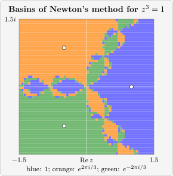

3.4 Newton’s method in the complex plane
Newton’s formula \(z_{n+1} = z_n-\frac {f(z_n)}{f'(z_n)}\) makes sense for complex \(z\) whenever \(f\) has a complex derivative.
Definition 3.4.1. A function \(f\) of a complex variable is differentiable at \(z_0\) if \[f'(z_0) = \lim _{h\rightarrow 0}\frac {f(z_0+h)-f(z_0)}{h}\] exists, where \(h\longrightarrow 0\) through complex values. It is analytic on an open set if it is differentiable at every point of the set. Polynomials, \(e^z\), \(\sin z\) and \(\cos z\) are analytic everywhere, with the familiar derivatives.
Theorem 3.4.2 (Cauchy–Riemann equations). Write \(z = x+iy\) and \(f(z) = u(x,y)+iv(x,y)\) with \(u, v\) real. If \(f\) is differentiable at \(z_0 = x_0+iy_0\), then the partial derivatives of \(u\) and \(v\) exist at \((x_0,y_0)\) and satisfy \[u_x = v_y,\qquad u_y = -v_x,\] and \(f'(z_0) = u_x+iv_x\).
Proof. Let \(h\longrightarrow 0\) along the real axis, \(h = t\) real: \begin {align*} f'(z_0) &= \lim _{t\rightarrow 0}\left (\frac {u(x_0+t,y_0)-u(x_0,y_0)}{t}+i\frac {v(x_0+t,y_0)-v(x_0,y_0)}{t}\right )\\ &= u_x+iv_x . \end {align*}
Now let \(h = it\) along the imaginary axis: \begin {align*} f'(z_0) &= \lim _{t\rightarrow 0}\left (\frac {u(x_0,y_0+t)-u(x_0,y_0)}{it}+i\frac {v(x_0,y_0+t)-v(x_0,y_0)}{it}\right )\\ &= -iu_y+v_y . \end {align*}
The two limits are equal, so comparing real and imaginary parts, \(u_x = v_y\) and \(v_x = -u_y\). □
For example \(f(z) = z^2 = (x^2-y^2)+i(2xy)\) has \(u_x = 2x = v_y\) and \(u_y = -2y = -v_x\), while \(f(z) = \bar z = x-iy\) has \(u_x = 1\neq -1 = v_y\) and is differentiable nowhere. The Cauchy–Riemann equations explain what complex Newton actually does.
Theorem 3.4.3. Let \(f = u+iv\) be analytic and \(f'(z_n)\neq 0\). Then the complex Newton step \(z_{n+1} = z_n-\frac {f(z_n)}{f'(z_n)}\), written in real coordinates \(z_n = x_n+iy_n\), is exactly the Newton step for the real system of two equations \[u(x,y) = 0,\qquad v(x,y) = 0 .\]
Proof. Newton’s method for a system \(F(x,y) = 0\) with \(F = (u,v)\) replaces \(F\) by its linear approximation and solves \(J\Delta = -F\), where \(J\) is the Jacobian matrix of partial derivatives. By the Cauchy–Riemann equations, \[J = \begin {pmatrix}u_x & u_y\\ v_x & v_y\end {pmatrix} = \begin {pmatrix}u_x & -v_x\\ v_x & u_x\end {pmatrix} .\] Multiplying a complex number \(\Delta x+i\Delta y\) by \(f' = u_x+iv_x\) gives \((u_x\Delta x-v_x\Delta y)+i(v_x\Delta x+u_x\Delta y)\), which is \(J\) applied to \((\Delta x,\Delta y)\). So the system \(J\Delta = -F\) says \(f'(z_n)(\Delta x+i\Delta y) = -f(z_n)\), which is the complex Newton step. □
So complex Newton inherits everything proved for Newton’s method: near a simple root (\(f'(p)\neq 0\)) it converges quadratically, with the same proof as Theorem 2.4.5 (the expansion \(f(z) = f(z_n)+f'(z_n)(z-z_n)+O(|z-z_n|^2)\) holds for analytic \(f\)). The theorem also explains why the Jacobian of an analytic function is so special: it is a rotation combined with a scaling.
Example 3.4.4. (a) Solve \(z^2+1 = 0\) by Newton’s method from \(z_0 = 1+i\). (b) What happens from the real starting value \(z_0 = 0.5\)?
Solution. (a) \(z_{n+1} = z_n-\frac {z_n^2+1}{2z_n} = \frac 12\left (z_n-\frac {1}{z_n}\right )\). From \(z_0 = 1+i\), \(\frac {1}{1+i} = \frac {1-i}{2}\) and \(z_1 = \frac 12\left (1+i-\frac {1-i}{2}\right ) = 0.25+0.75i\). Continuing, \begin {gather*} z_2 = -0.075+0.975i,\qquad z_3 = 0.0017157+0.9973039i,\\ z_4 = -0.0000046+1.0000022i, \end {gather*} with errors \(|z_n-i|\) of \(3.5\times 10^{-1}\), \(7.9\times 10^{-2}\), \(3.2\times 10^{-3}\), \(5.1\times 10^{-6}\), \(1.3\times 10^{-11}\): quadratic convergence to the root \(i\).
(b) If \(z_0\) is real, every \(z_n\) is real, since the formula involves only real arithmetic. The iterates \(-0.75, 0.2917, -1.5685, -0.4654, 0.8415,\dots \) wander along the real axis and never approach \(\pm i\). To find complex roots of a real polynomial with Newton’s method, the starting value must itself be complex.
Example 3.4.5. Apply Newton’s method to \(z^3-1 = 0\) from \(z_0 = -1+i\), and describe how the root reached depends on the starting value.
Solution. Here \(z_{n+1} = z_n-\frac {z_n^3-1}{3z_n^2} = \frac {2z_n^3+1}{3z_n^2}\). From \(-1+i\): \[-0.6667+0.8333i,\quad -0.5087+0.8411i,\quad -0.4993+0.8663i,\quad -0.49999991+0.86602490i,\] converging quadratically to \(e^{2\pi i/3} = -0.5+0.8660254i\).
Figure 5 colours each starting point of the square \(|\operatorname {Re}z|,|\operatorname {Im}z|\leq 1.5\) by the root to which Newton’s method converges from it. Near each root the basin of attraction is a large simple region, as Theorem 2.4.4 predicts. But the three basins meet along an intricate boundary: every point of the boundary of one basin is also a boundary point of the other two, and arbitrarily close to it are starting points that lead to each root. Starting values far from all roots can give unpredictable results, which is the complex counterpart of the failures in Example 2.4.6.

Questions on this section
Stuck on something here? Ask below and it stays attached to this topic.